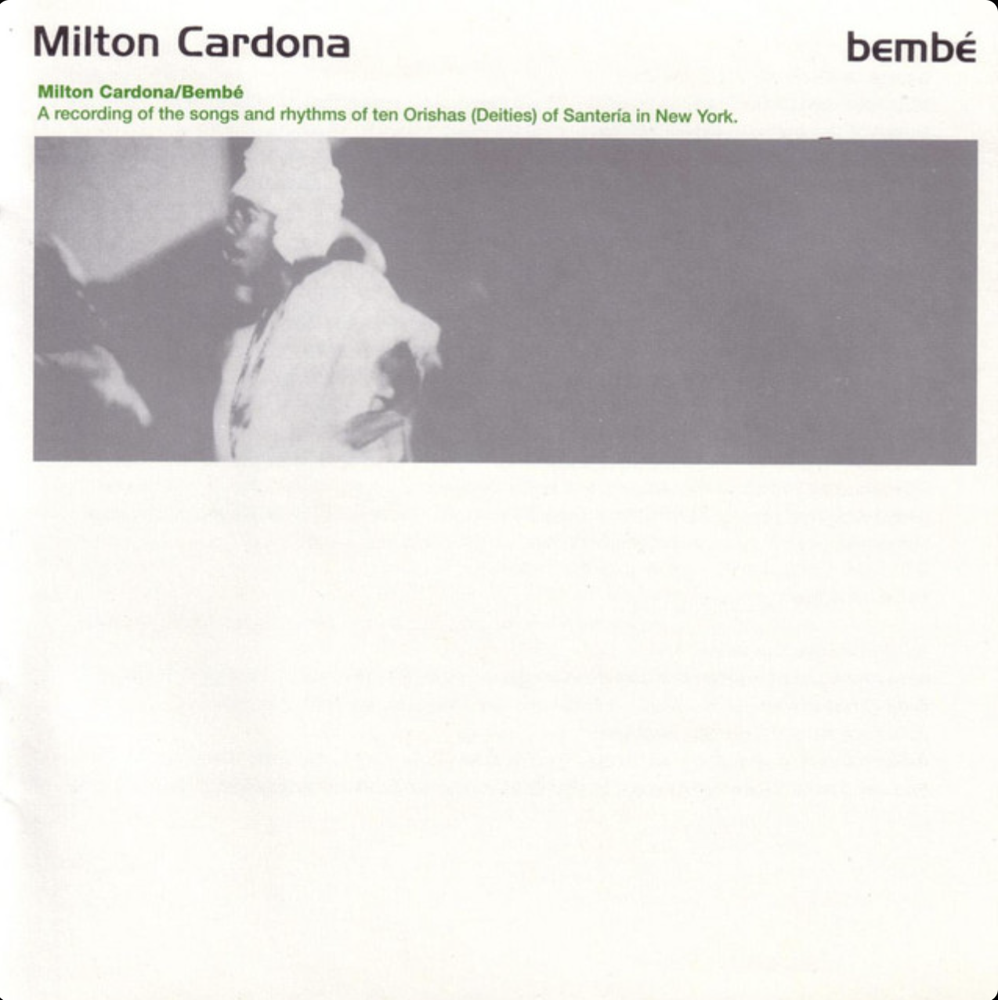

Bembé – Milton Cardona
MÀWÒ... ò́ ♪
| 1 - S. ELEGUÁ | 0:00--1:09 | OLUMBANSHÉ | barasuayo |
| 2 - ELEGUÁ | 0:00--1:21 | LATOKPA | ibarago moyuba |
| 1:21--2:11 | LATOKPA | agongo laro | |
| 2:11--3:21 | LATOKPA | echu o elegbara e | |
| 3:21--3:55 | LATOKPA | abukenke | |
| 3 - OGÚN | 0:00--0:54 | IMBALOKE | ogun de arere |
| 0:54--1:23 | IMBALOKE | ?aguanile may may | |
| 1:23--1:36 | IMBALOKE | a fere yo | |
| 1:36--1:51 | IMBALOKE | ?aguanile may may | |
| 1:51--2:18 | IMBALOKE | ogun meye un | |
| 2:18--3:034 | IMBALOKE | ?aguanile may may | |
| 4 - OCHOSI | 0:00--0:33 | OGGUÉ | wara wara |
| 0:33--0:50 | OGGUÉ | ochosi ayilodá | |
| 0:50--1:05 | OGGUÉ | oda mata oré oré | |
| 1:05--1:21 | OGGUÉ | ñame beleke iworo odemata agolona | |
| 1:21--1:35 | OGGUÉ | oda mata oré oré | |
| 1:35--1:59 | OGGUÉ | ñame beleke iworo odemata agolona | |
| 1:55--2:26 | OGGUÉ | oda mata oré oré | |
| 5 - EBIOSO | 0:00--1:23 | (PALMAS) | merewo timbo lode |
| 1:23--2:29 | (GUIRO) | eniwe niwe ro, badase sale ko | |
| 6 - BABALÚ AYÉ | 0:00--0:26 | BARIBA OGUE DE MA | bariba ogé de ma |
| 0:26--1:04 | BARIBA OGUE DE MA | aberiku to agua | |
| 1:04--2:33 | BARIBA OGUE DE MA | baba sorrosa | |
| 2:33--3:25 | YEGUA | remolque remolque | |
| 3:25--3:53 | YEGUA | (seco) | |
| 7 - OBATALÁ | 0:00--1:48 | RUMBA OBATALÁ | baba fururu |
| 1:48--4:29 | RUMBA OBATALÁ | enu aye mi mo se o | |
| 8 - CHANGÓ | 0:00--0:48 | CHACHÁLOKPAFÚÑ | oba yana-yana |
| 0:48--1:09 | CHACHÁLOKPAFÚÑ | oba icheré | |
| 1:09--1:35 | CHACHÁLOKPAFÚÑ | kawo e | |
| 1:35--1:52 | CHACHÁLOKPAFÚÑ | tere mina iñodé | |
| 1:52--2:31 | CHACHÁLOKPAFÚÑ | alakata nigo ba - 1 | |
| 2:31--3:07 | CHACHÁLOKPAFÚÑ | alakata nigo ba - 2 | |
| 3:07--3:32 | META-META / (SECO) | (seco) | |
| 3:32--4:21 | META-META | oba ibo | |
| 4:21--5:13 | META-META / (SECO) | (seco) | |
| 9 - YEMAYÁ | 0:00--0:40 | ORO SECO | (seco) |
| 0:40--1:10 | SUBIDA META | (seco) | |
| 1:10--2:06 | META-META | (seco) | |
| 2:06--4:05 | YAKOTÁ | yemayá asesú | |
| 4:05--5:04 | YAKOTÁ | soku tani wo | |
| 5:04--5:52 | YAKOTÁ | barago ago yemayá | |
| 10 - OCHÚN | 0:00--1:28 | ??BEMBE / CAMP | (seco) |
| 1:28--2:04 | IMBALOKE | (seco) | |
| 2:04--4:12 | IMBALOKE | (seco) | |
| 11 - ODDUDUA | 0:00--2:32 | ODDUDUA | akuo ago lona |
| 12 - ELEGUA - C | 0:00--0:43 | ?ELEGUA 1 | ?elegua nita laroye sokuo |
| 0:43--1:00 | ?ELEGUA 1 | ago eleguua e | |
| 1:00--1:51 | ?ELEGUA 1 | ?bawa arisa bawa o ae | |
| 1:51--2:02 | ORO | (seco) |